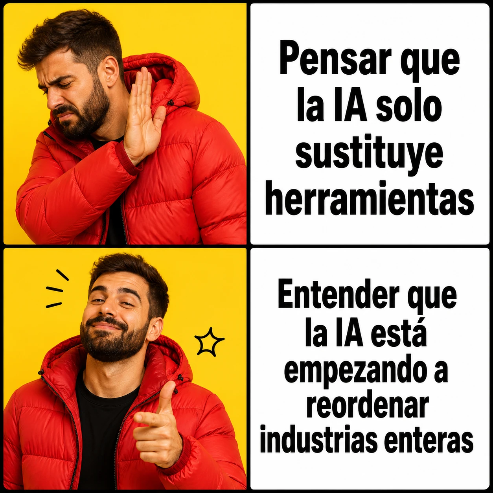

estrategIA #139 ·
No cambia solo la herramienta
El contexto
Una cosa es sustituir una herramienta y otra cambiar cómo trabaja una industria entera. El artículo describía empresas de IA que intentan participar en todo el proceso de trabajo, no solo vender una aplicación. Los dos gestos invitan a mirar ese cambio y quién gana poder con él.
Publicado en: estrategIA #139 — La nueva fase de la IA: datos, industrias y poder
Leer el texto de la imagen
Pensar que la IA solo sustituye herramientas Entender que la IA está empezando a reordenar industrias enteras